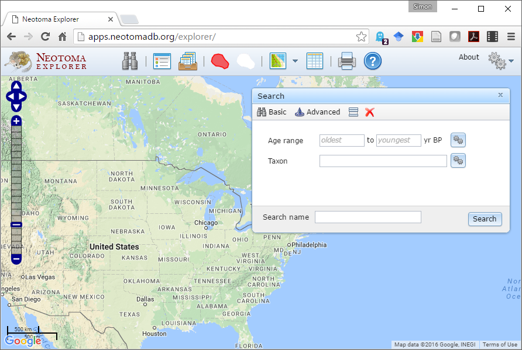

Neotoma CANQUA Workshop
Exploring With Neotoma
Neotoma Explorer
A map based explorer, search directly, or through URL Direct navigation
Search for Data
Search for Sites
- Use the Search dialog window
- Advanced tab
- Metadata subtab
- Site Name field
- find "Devil's Lake, WI".
What is the latitude and longitude of Devil's Lake? What is the Site ID?
The lat/long is XXXX.View Data
What was the most abundant plant taxon at Devil's Lake during the end of the Pleistocene?
The most abundant taxon at Devil's Lake was Picea.What has been the most abundant taxon during the Holocene? (from 11,000 years ago to present)
*Note: Here we are assuming that plant with the most abundant pollen in sediments is also the most abundant on the landscape. This isn't necessarily a good assumption; we'll save that challenge for another day.*Using the information in the Chronology tab, how many age controls are stored for Devil's Lake? How many of these are radiocarbon dates?
This is the answerWhat publications are listed for Devil's Lake?
Here's the answer.Find All Work by a PI
In which states has Lou worked?
Find All Datasets by Type
The generation of fossil pollen records is labor intensive and hence expensive - *e.g.* the costs of fieldwork, the money spent on radiocarbon dates, the time required for a trained analysis to identify and count pollen data, etc. A rough time/cost estimate for a single fossil pollen record is on the order of two years and $30,000. Given this, give an order-of-magnitude estimate of the number of person-years and dollars it took to generate these fossil pollen records now stored in Neotoma. (Order-of-magnitude = 10 person-years? 100 person-years? 1000? etc.)
Notice there is a fairly dense network of fossil pollen sites in an arc stretching from Minnesota to Nova Scotia. Why might there be such a dense network in this region?
Show/Hide Search Results
Download Data
- In the popup window with metadata for Devil's Lake, hold the mouse over the pollen dataset. Note that an eyeball and '+' appear to the right. Click on the '+'. This adds the dataset to a 'Datasets' tray.
- Find the icon for the 'Saved Datasets Tray' and click on it.
- Hover over the dataset then click on the Save icon to the right. The dataset will be saved as a text file in CSV (comma separated value) format.
- Open the downloaded CSV file in Excel or a text editor (e.g. Notepad, Wordpad) to look at it.
What is the most abundant taxon at Depth = 1 cm?
It's this taxon.